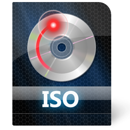

Iso é una estensione utilizzata generalmente per immagini ISO, cioé un file che contiene l'intero contenuto
di un disco ottico (CD o DVD) che puó essere usato direttamente (tramite software di emulazione) oppure inciso
su un supporto fisico tramite il processo di masterizzazione.
Il nome dell'estensione deriva da ISO 9660, il file system standard per i CD-ROM e che coincide con il contenuto
del file ISO.

Ansi
ANSI: (American National Standards Institute) organizzazione che definisce gli standard in differenti settori industriali.
Nel settore informatico indica il modo in cui i caratteri appaiono sul monitor o come i computer comunicano fra di loro.
Per esempio, grazie all'utilizzo del driver Ansi, insieme a particolari sequenze di codici, possibile modificare le
caratteristiche grafiche, controllare il cursore e ridefinire i tasti del computer. Questo driver puó essere utilizzato
per creare semplicissime interfacce grafiche in ambiente DOS. Le sequenze di codici da utilizzare per i comandi sono chiamate
sequenze di Escape. Il set di caratteri ANSI standard consente di visualizzare fino a 256 simboli diversi (ogni carattere
costituito da un byte (8 bit)). A. Sys: in ambiente DOS un driver che consente di usare comandi ANSI (vedi) per il
controllo del video e/o tastiera. A.Virus: virus che, modificando il file di sistema config.sys, assegnano alla pressione dei
tasti l'esecuzione di comandi potenzialmente dannosi (Format, Del, Deltree) per il sistema.
Ieee
IEEE é l'acronimo di Institute of Electrical and Electronic Engineers, é stato fondato nel 1884, ed é la piú grande
organizzazione non-profit di professionisti che si dedicano allinnovazione tecnologica. ha piú di trecentotrenta mila membri
in centosessanta nazioni. Attualmente i compiti dell'IEEE sono essenzialmente di carattere scientifico e divulgativo.
A oggi pubblica circa il trenta per cento di tutta la letteratura mondiale sull'ingegneria elettronica, computer science, tecnologia
di controllo e telecomunicazione. Ogni anno organizza circa trecento conferenze e ospita seimila meeting locali. In piú promuove
gli standard industriali e per le tecnologie di consumo: a oggi ci sono piú di ottocento standard usati correntemente nei prodotti
delle industrie elettroniche e altri settecento sono in lavorazione. L'IEEE é stato fondamentale nello sviluppo di internet, infatti
ha standardizzato numerose tecnologie per il trasferimento dell'informazione sia via cavo che su rete wireless. A oggi la maggior parte
degli oggetti elettronici che noi usiamo comunemente non esisterebbe senza il contributo dell'IEEE.